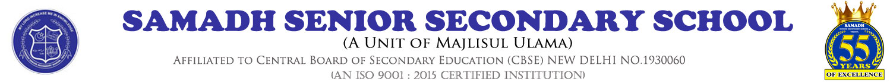

Samadh Senior Secondary School was founded in 1964 by Haji Janab N. M. K. Abdul Khader Sahib in fond memory of his beloved brotherJanab N.M.K. Abdul Samadh Sahib.It has blossomed from Lower Primary to Higher Secondary and was recognized byCentral Board of Secondary Education (CBSE) in the year 1978.
The school took new shape and structure as various school managing committees toiled day in day out. Sincere gratitude to each one of them for their undying spirit and vision.